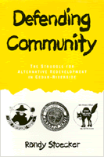

<body bgcolor="#FFFFFF" text="#000000" link="#0000FF" vlink="#CC0000" alink="#CC0000"><center><hr width="350" size="1" align="center" noshade>A counter-culture urban community takes control of its redevelopment<hr width="350" size="1" align="center" noshade><p><a href="https://cdcshoppingcart.uchicago.edu/Cart/ChicagoBook.aspx?ISBN=9781566391276&&PRESS=temple" target="_top">Buy this book!</a> | <a href="https://cdcshoppingcart.uchicago.edu/Cart/Cart.aspx?PRESS=temple" target="_top">View Cart</a> | <a href="https://cdcshoppingcart.uchicago.edu/Cart/Cart.aspx?PRESS=temple" target="_top">Check Out</a></p><p></p></center><!--none//--><h1>Defending Community</h1>
<H2>The Struggle for Alternative Redevelopment in Cedar-Riverside</H2>
<h3>Randy Stoecker</h3>
<P>cloth 1-56639-127-X $89.50, Jan 94, <FONT COLOR=#990033>Available</FONT>
<br>paper 1-56639-128-8 $34.95, Feb 94, <FONT COLOR=#990033>Available</FONT>
<br>Electronic Book 1-43990-420-0 $34.95 <FONT COLOR=#990033>Available</FONT>
<BR> 328 pp
6x9
11&nbsp;figures 13&nbsp;halftones
</P><p>Randy Stoecker's intimate biography of Cedar-Riverside, nationally known for a period as "the Haight-Ashbury of the Mid-West," contains important lessons about the conflicts between the needs of capitalism and the needs of community. While attending graduate school at the University of Minnesota, the author moved to Cedar-Riverside, a Minneapolis neighborhood known for its determination to enact values of peace, justice, wholeness, participation, and community in its truest sense. There he experienced first-hand the clashes between a radical community and state-backed urban developers.
<p>His narrative tells the story of a community that overcame the odds against its own survival. Slated for total demolition, the neighborhood was saved by a powerful grass-roots movement. Citizens stopped a state-capital coalition from entombing the community in concrete and went on to create one of the largest community controlled urban redevelopment projects in the country After more than twenty years of struggle, Cedar-Riverside continues to experience citizen-controlled urban redevelopment on its own terms, setting an example for other communities, urban planners, and policymakers.
<BR>&nbsp;<h2>Excerpt</h2><P>Excerpt available at <a href="http://www.temple.edu/tempress">www.temple.edu/tempress</a></p>
<BR>&nbsp;<h2>Reviews</h2>
<p><i>"Stoecker does a good job of conveying the importance of politics and government in determining the fate of Cedar-Riverside."</i>
<br>&#151<b><i>Journal of American History</i></b>
<BR>&nbsp;<h2>Contents</h2><P>
<p>Preface
<br>Abbreviations
<br>Map of Cedar-Riverside
<br>1. Capital, Community, and Cedar-Riverside: An Overview
<br>2. Capital Invades Cedar-Riverside
<br>3. A New Community Forms Against the New Town
<br>4. Building on Community: Organizing the Resistance
<br>5. The Growth Coalition Falters
<br>6. Building the Foundation for Community-Based Development
<br>7. The Struggle Within
<br>8. The Role of Community in Urban Insurgency
<br>9. The Limits and the Potential of Community Control of Urban Redevelopment
<br>10. The Legacy of Cedar-Riverside
<br>Appendix: Interviewees and Interviews
<br>Notes
<br>References
<br>Bibliography of Newspapers and Newsletters
<br>Index
</P><BR>&nbsp;<H2>About the Author(s)</H2>
<P><b>Randy Stoecker</b> is Assistant Professor of Sociology at the University of Toledo.</P>
<BR><H2>Subject Categories</H2>
<p>
<BR><A HREF="/tempress/urban.html" TARGET="_top">Urban Studies</a>
</p>
<BR><h2 class="inpageheading">In the series</H2>
<P><I><a href="http://www.temple.edu/tempress/conflicts.html" onMouseOver="window.status='Click for other books in this series!'; return true;" onMouseOut="window.status=''; return true;" target="_top">Conflicts in Urban and Regional Development</a></i>, edited by John R. Logan and Todd Swanstrom.
</p><p><i>Conflicts in Urban and Regional Development</i>, edited by John R. Logan and Todd Swanstrom, includes books on urban policy and issues of city and regional planning, accounts of the political economy of individual cities, and books that compare policies across cities and countries.</p>
<p align="center"><a href="https://cdcshoppingcart.uchicago.edu/Cart/ChicagoBook.aspx?ISBN=9781566391276&&PRESS=temple" target="_top">Buy this book!</a> | <a href="https://cdcshoppingcart.uchicago.edu/Cart/Cart.aspx?PRESS=temple" target="_top">View Cart</a> | <a href="https://cdcshoppingcart.uchicago.edu/Cart/Cart.aspx?PRESS=temple" target="_top">Check Out</a></p><p><font face="Arial" size="1"><a href="copyright.html" onMouseOver="window.status='Web Copyright Policy';return true;" onMouseOut="window.status=''" title="Web Copyright Policy">&copy;</a> 2015 <a href="http://www.temple.edu" target="new" onMouseOver="window.status='Link to Temple University home page';return true;" onMouseOut="window.status=''" title="Link to Temple University home page">Temple University</a>. All Rights Reserved. http://www.temple.edu/tempress/titles/1111_reg.html</font></p>